Static Task Graph実行における実験図
画像はワークスペース内の実ファイルを直接参照しています。
実カーネル処理時間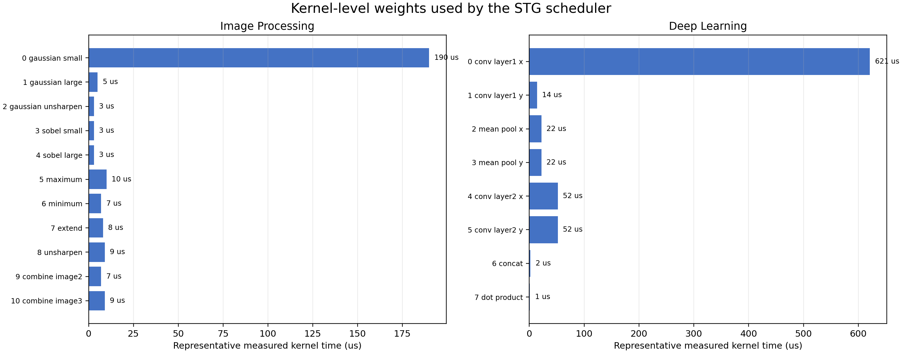
Vector Square DAG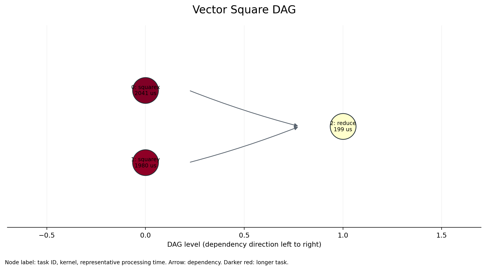
Black-Scholes DAG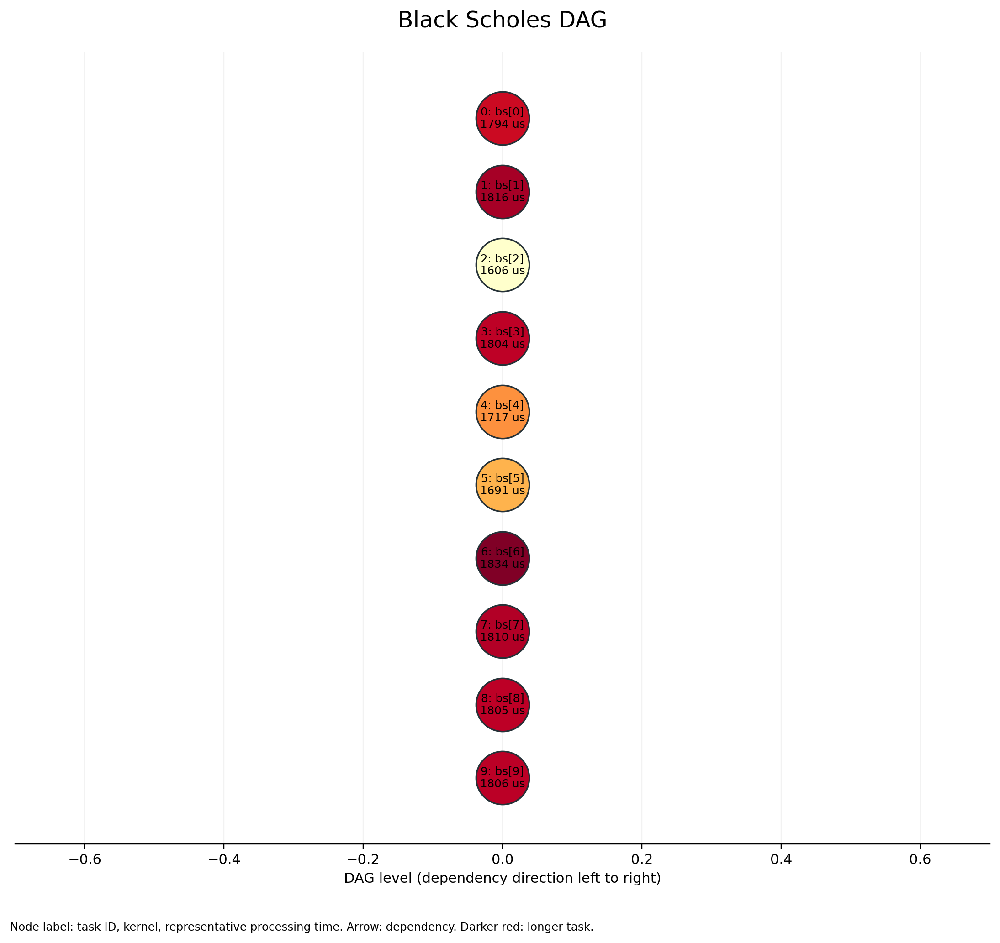
Machine Learning DAG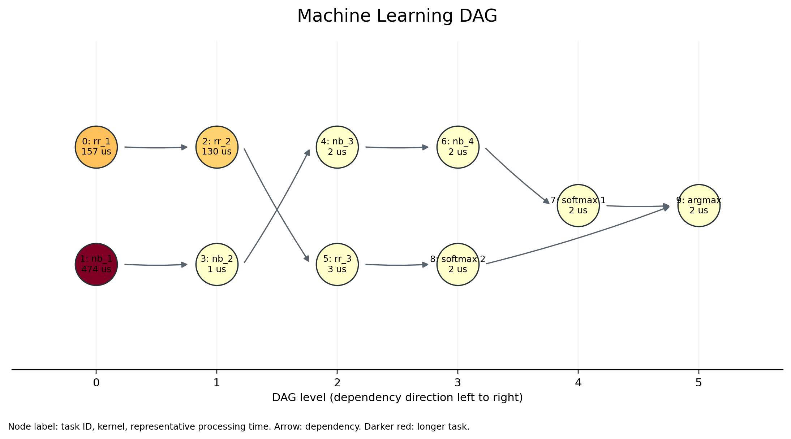
HITS DAG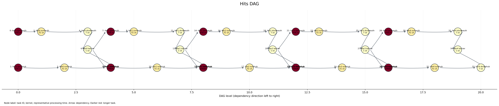
Image Processing DAG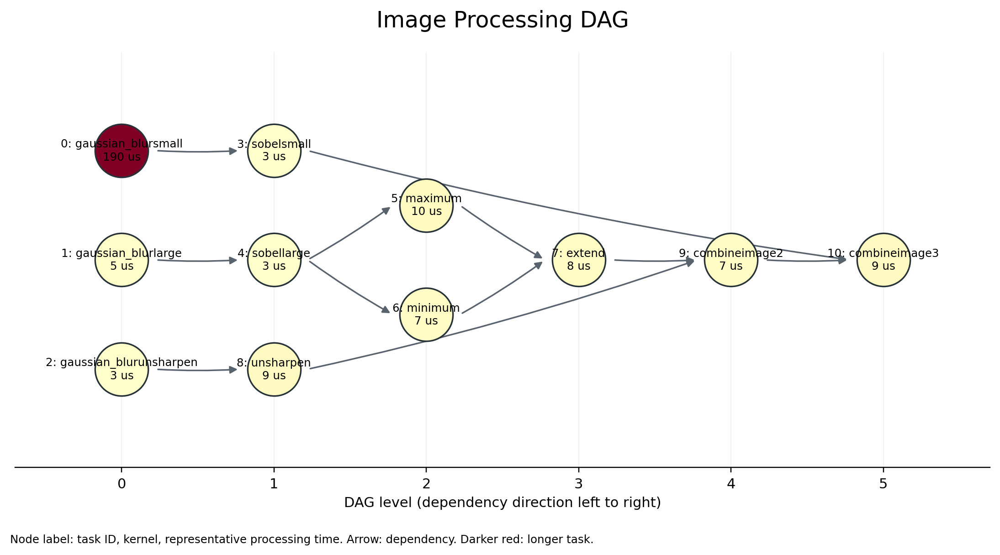
Deep Learning DAG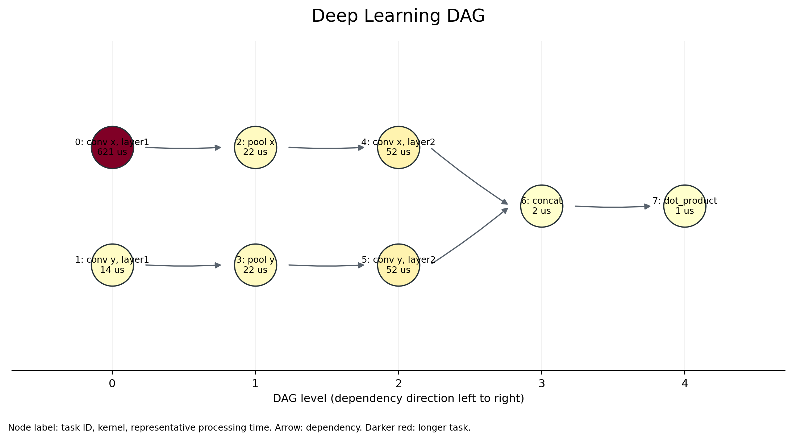
合成STGの4手法比較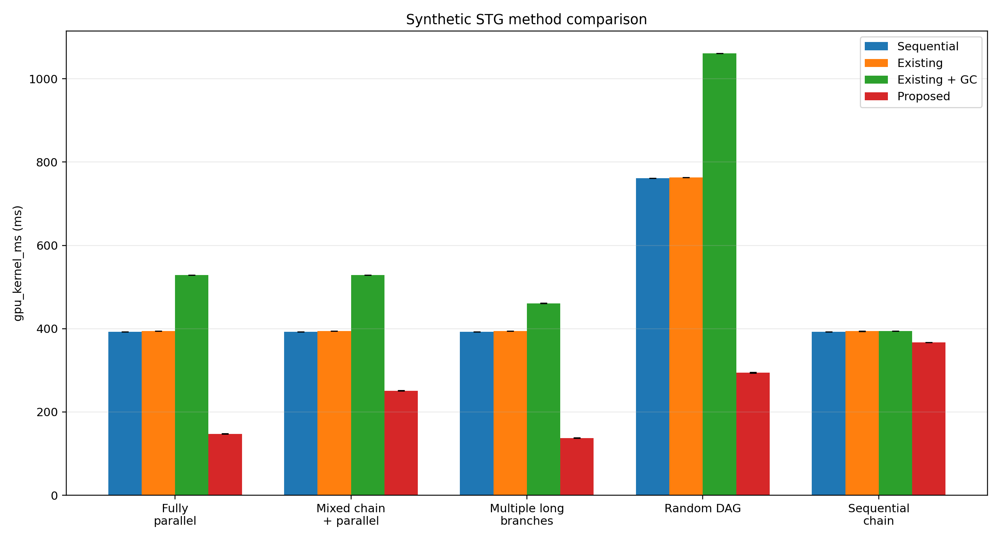
実アプリケーションの4手法比較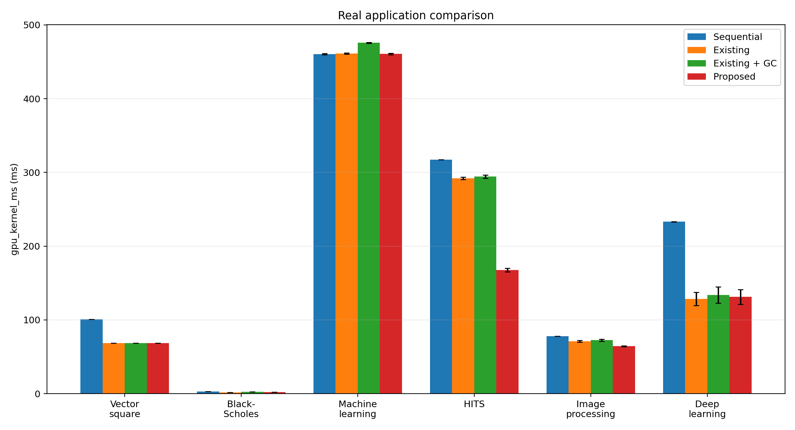
アブレーション実行時間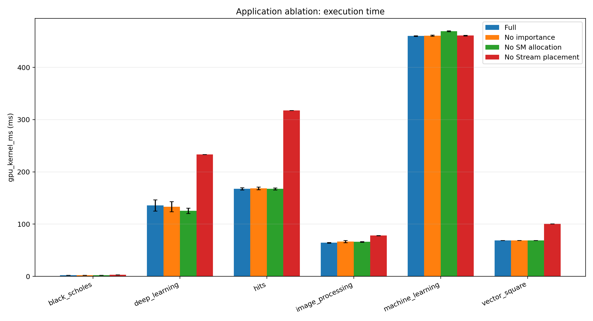
Stream数感度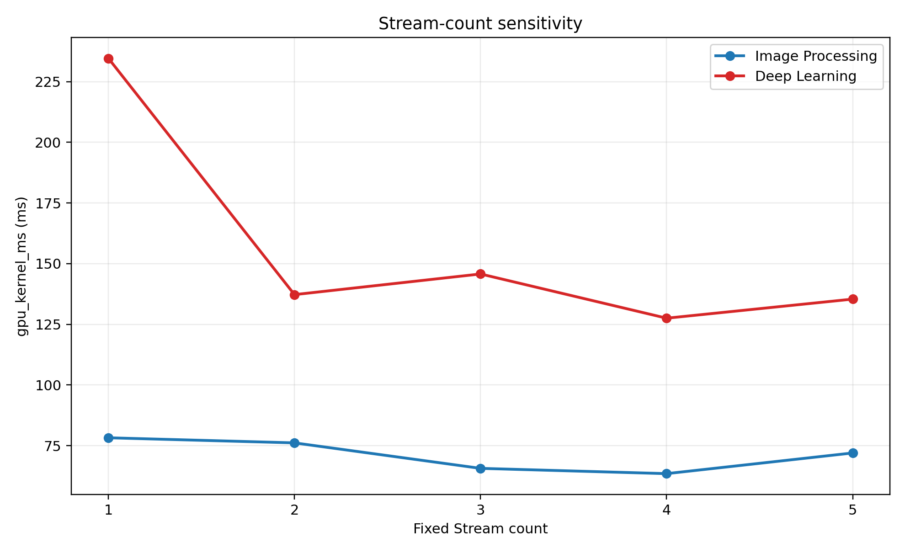
SM使用率比較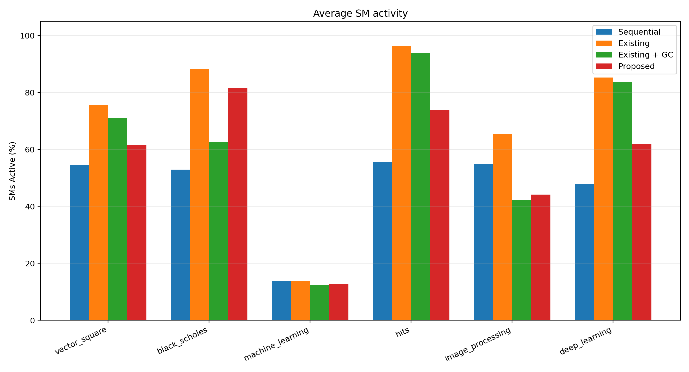